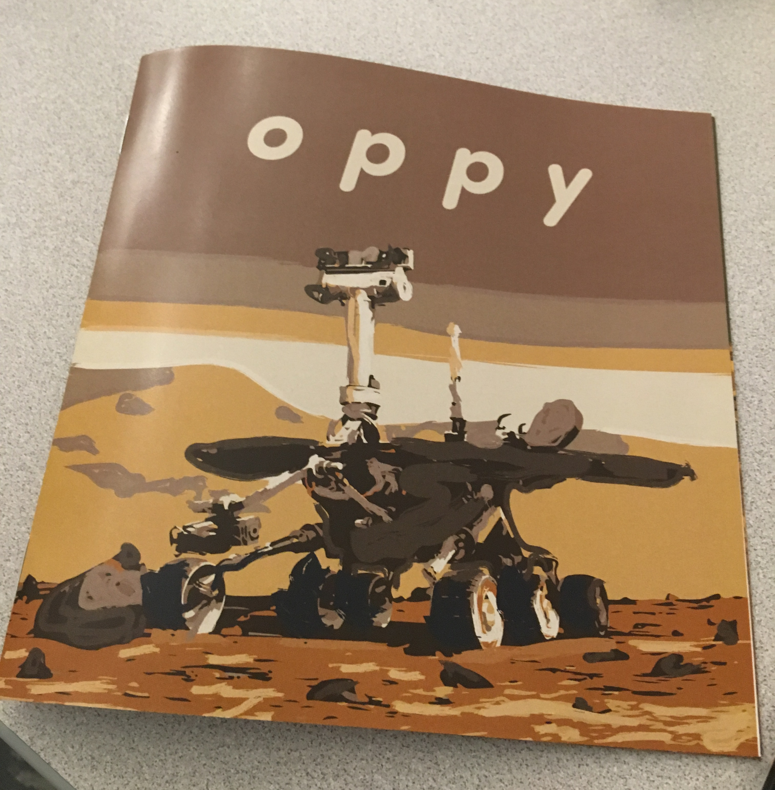
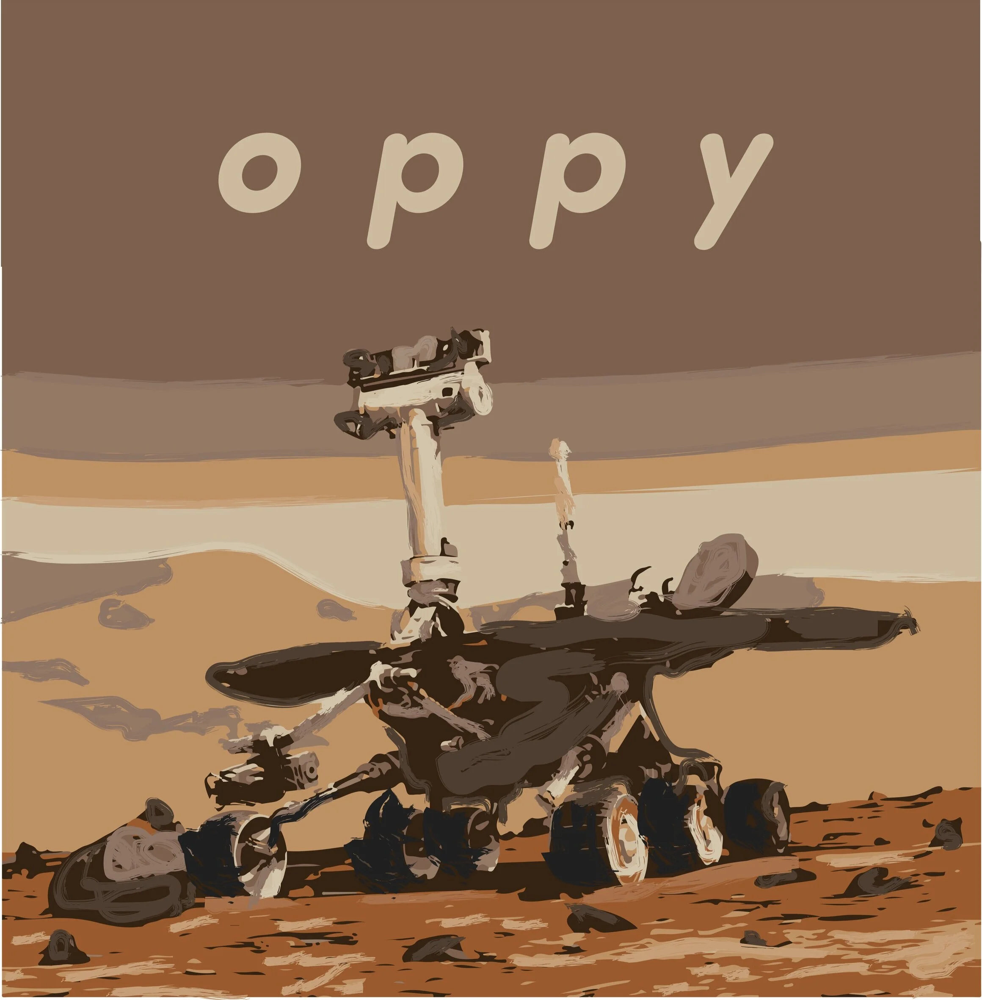

Overview
A children's storybook on the life of Opportunity, a planetary rover active on Mars from 2004 until 2018. Made using Illustrator. Assembled in InDesign.


1 / 10
A children's storybook on the life of Opportunity, a planetary rover active on Mars from 2004 until 2018. Made using Illustrator. Assembled in InDesign.


1 / 10